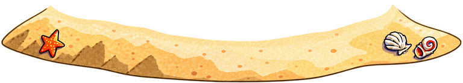
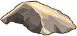

First, judge the new beach shape, how it joins the island, and the rock. The low-tide waves are the next artwork step.
Loading images...


Static shape review only. These two drafts have not replaced the production artwork. Open the full draft image.